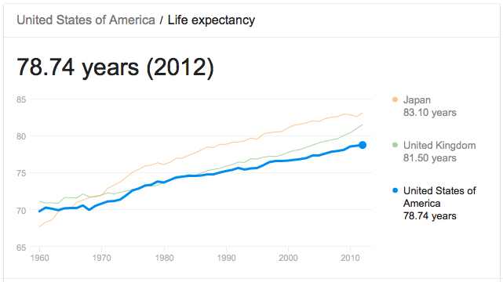

How about we speak in plain language?
I'd wager the person you're looking for harbors essential characteristics
that go beyond the ethereal "wonderful communication skills" or brute
force tactics like "hustle".
In general, it's almost always somewhere in between, and you know it when you see it.
It's been my experience that the most enjoyable and effective colleagues always embody these qualities:
- Keen insight to identify and rectify problems prior to them surfacing as problems
- Great social skills (particularly empathy, positivity, humor, and confidence) to get along swimmingly with others
- Deep knowledge into your industry trends, or the ability to rapidly gather that information
- Technical skills to leverage already-in-place technology
- Above-average communication and presentation skills that will assert leadership and "wow" clients
And yes, I'm sure there's more. But a relationship is a two-way street.
So, in return for the services
these star employees are offering - what do I think this called "great fit" should expect?
First, I think they should realize that most employers - at a bare minimum - are quite happy to reward
this sort of employee with an inclusive working enviornment and financial
stability.
What's important beyond those items?
I may not have all the answers - but I'll be damned if I don't try and
obtain what will make me happy in this world.

Yikes. Now's probably a good time to think about what I want out of a modern, professional life.
- Career growth & mentorship. I want to be consistently updating my LinkedIn with more impressive bullet points and job titles.
- Financial leverage. I have much to offer, and I expect to be fairly rewarded.
- Interesting, challenging problems. If I'm coasting on auto-pilot, something's wrong.
- Vacations. I'm young and very much knee deep in the work-hard-play-hard mentality. Does this change as one ages?
- Dynamic social interactions. We're social creatures that spend most of our waking life working. So, in this department I insist on quality.
- Opportunities for skill development. Nothing in life remains the same, and I'd quite like not to be automated out of business at 50.
_______
If you've gotten this far...
Perhaps you're considering clicking around my site to learn more about my professional whereabouts. I'm flattered.
Or maybe you're getting a weird vibe that you can't quite put your finger on. You just know
you're not enjoying it.
Hey- that works, too. And it's one less resumé in the stack to dig through.
Either way, enjoy.
:)